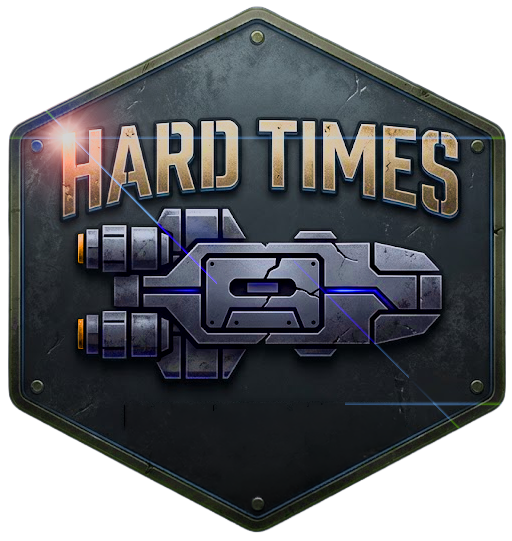

Dark Matter · The Margin Sector
You are prisoners on The Rock. Whatever it is on paper, it isn't really a prison.
▼ transmission follows ▼
This era began the night an assassin's blade found Emperor Strephon and his heirs, and the Iridium Throne has stood empty — and violently contested — ever since. Archduke Dulinor. Margaret of Antares. A dozen lesser claimants with a dozen lesser fleets, each certain the crown was theirs by right. Ten years of civil war between them has left the Third Imperium hollowed out from the inside: no side strong enough to win, none willing to be the first to stop.
Out on the fringes, where the old Imperial lines have gone ragged and unpoliced, that exhaustion has curdled into something else entirely — a frontier of political intrigue, mercenary contracts, and smuggling runs, where a tank of fuel or an honest trade deal is worth as much as blood. This is the Margin: the volatile buffer between the Third Imperium, the K'kree Two Thousand Worlds, and a third power yet to be named — a chaotic scatter of unaffiliated worlds, pocket empires, and minor alien races that answer to no one and trust even less.
Sector and subsector detail will be generated at the table as it's needed — nothing about the surrounding systems is fixed until it's actually been played.
You are all prisoners on The Rock, an asteroid adrift somewhere in the black. In your time here, you've learned a few things: